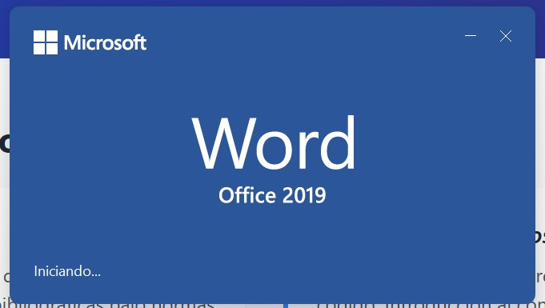

1. Procesadores de Texto
Procesadores Estándar (Word)
Enfoque en la gestión de documentos extensos, uso de estilos jerárquicos, tablas de contenido automáticas y gestión de citas bibliográficas bajo normas APA.
Procesadores Técnicos
Diferenciación entre editores WYSIWYG y sistemas de composición por código. Introducción al concepto de estructura lógica del documento.
2. LaTeX y Entornos Científicos
El estándar de oro para la comunicación científica. En la cátedra utilizamos:
% Ejemplo de código visto en clase
\documentclass{article}
\begin{document}
La integral de la función es: $\int_{a}^{b} f(x) dx$
\end{document}
3. Ecosistema de IA
Gemini
Multimodalidad y razonamiento lógico avanzado.
Claude
Excelencia en redacción técnica y análisis de código.
NotebookLM
Gestión de fuentes y creación de bases de conocimiento.
4. Visualización con GeoGebra
"Aquí los alumnos deben insertar su Applet dinámico mediante iframe"
Captura de Interfaz Word

Descripción técnica de la herramienta.